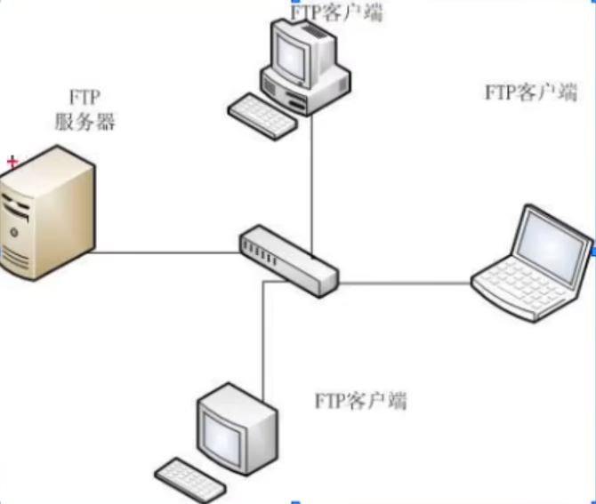
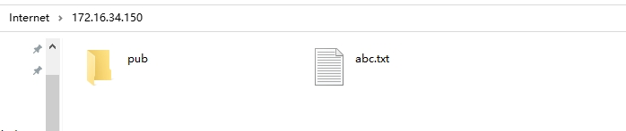
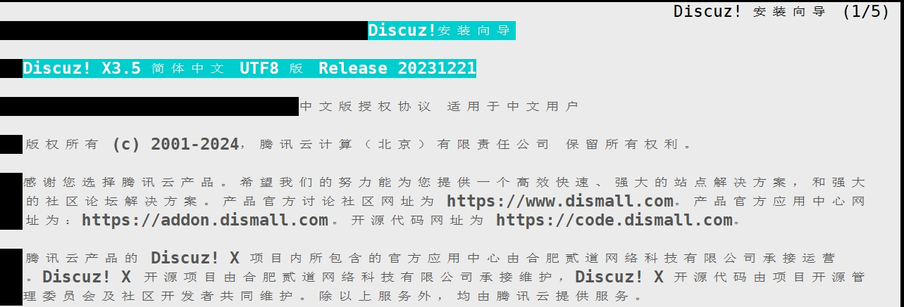
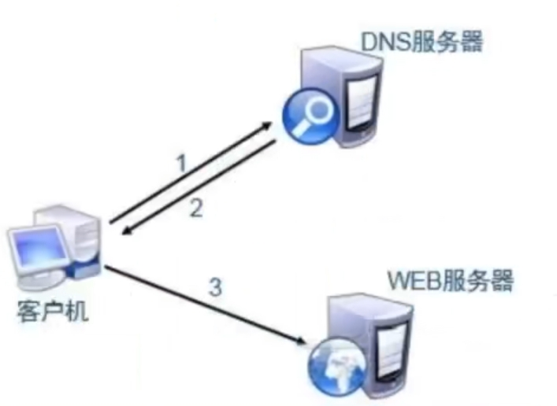
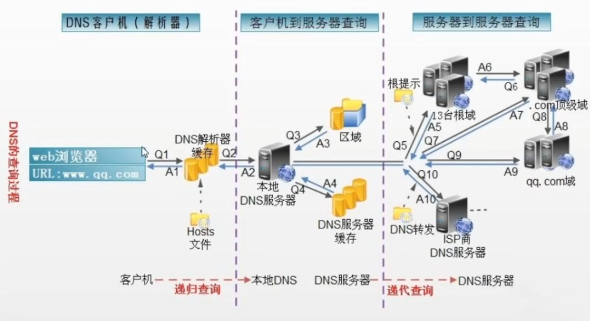

Linux常用命令（五）
查看端口号
根据进程查看端口
- 先用
ps aux | grep xxx(某个进程)，可以查看某个进程的pid。 - 再用
netstat -anp | grep pid号，可以查看到该进程占用的端口号ps aux | grep vsftp #获取进程号
[root@localhost ~]# ps aux | grep vsftp
root 1668 0.0 0.0 53292 700 ? Ss 10:55 0:00 /usr/sbin/vsftpd /etc/vsftpd/vsftpd.conf
yum install net-tools -y #安装网络工具软件
netstat -anp | grep 1668 #查看端口
[root@localhost ~]# netstat -anp | grep 1668
tcp6 0 0 :::21 :::* LISTEN 1668/vsftpd
unix 2 [ ] DGRAM 19629 1668/vsftpd
根据端口查进程
使用 netstat -nap | grep port
netstat -nap | grep 21 |
查看历史命令
history #查看历史命令 |
防火墙
- firewalld简介：保护互联网对服务器的影响
- selinux简介：保护服务器内部程序对内部文件的访问，centos7默认开启
- firewalld临时关闭：
systemctl stop firewalld - firewalld永久关闭：
systemctl enable firewalld - firewalld状态查看：
systemctl status firewalld - selinux临时关闭：
setenforce 0 - selinux永久关闭：
vim /etc/sysconfig/selinux
修改为
SELINUX=disabled - selinux状态查看：
getenforce，(enforcing 开启，permissive 禁止，disable 关闭)
文件服务
FTP 服务
- 简介：
- 名词解释：FTP(File Transfer Protocol, 文件传输协议)，是TCP/IP协议组中的协议之一
- logo
- 作用
- 提供文件共享服务
- 互联网上多数的媒体资源和软件资源，多数是由FTP服务器传递
- 软件包：vsftpd

- 名词解释：FTP(File Transfer Protocol, 文件传输协议)，是TCP/IP协议组中的协议之一
- 基础
- 控制端口command 21/tcp
- 数据端口data 20/tcp
- FTP 服务端默认配置
- 安装vsftpd：
yum -y install vsftpd - 准备分发内容
touch /var/ftp/abc.txt- FTP服务器的主目录为：
/var/ftp/，是FTP程序分享内容的本机目录
- 启动服务
systemctl start vsftpdsystemctl enable vsftpd
- 关闭防火墙
- 安装vsftpd：
- FTP 客户端：通过windows访问FTP
- 打开我的电脑，在上面的路径栏上输入
ftp://ftp服务器的ip地址 ftp://172.16.34.150- 如果有用户名和密码就输入，没有就可以直接看到文件了

- 打开我的电脑，在上面的路径栏上输入
- centos7 客户端：
- 下载：lftp
yum -y install lftplftp ftp服务器的ip地址lftp 172.16.34.150get abc.txt#下载文件mirror pub#下载文件夹exit#退出- 下载至当前目录
- wget下载
wget ftp://ftp服务器的ip地址/文件#下载文件wget ftp://172.16.34.150/abc.txtwget -m ftp://172.16.34.150/pub#下载文件夹，-m表示mirror
- 启动上传功能
- 配置文件
- 用于设定FTP服务器的功能开启或关闭
vim /etc/vsftpd/vsftpd.conf
- 检查禁用匿名账户登录开启
- 目的：启用后禁用匿名账户(默认)
anonymous_enable=YES#No需要用户名和密码，并进入用户的家目录
- 配置上传指令
anon_upload_enable=YES#启动上传文件共能anon_mkdir_write_enable=YES#启动创建文件夹的功能
- 创建上传目录，不能用默认目录
mkdir /var/ftp/uploadchmod 777 /var/ftp/upload
- 配置文件
- 测试
- 登录服务器：
lftp 172.16.34.150 - 进入上传目录：
cd upload - 上传文件：
put 2.txt - 创建目录：
mkdir 252 - 上传目录：
mirror -R aaa
- 登录服务器：
NFS
- 简介
- NFS：Network File System网络文件管理系统，Linux/Unix系统之间共享文件的一种协议
- NFS的客户端主要为Linux
- 支持多节点同时挂载以及并发写入
- 作用
- 提供文件共享服务
- 为集群中的Web Server配置后端存储
- 操作可以参考：Centos8集群Torque作业管理系统安装（二）
SSH
- 简介：可以借助SSH(安全外壳协议)远程操作和管理系统，不仅方便且安全可靠
- 安装：
yum -y install openssh-server - 启动：
systemctl start sshdsystemctl enable sshd
ssh root@172.16.34.151#远程控制主机
网站服务
概念
- 名词
- HTML：HyperText Markup Language(超级文本标记语言)
- 网页：使用HTML，PHP，JAVA语言格式书写的文本
- 主页：网页中呈现用户的第一个页面
- 网站：多个网页组合而成
- URL
- Uniform Resource Locator
- 同一资源定位符
- 防卫网站的地址
- 网站架构
- LAMP：Linux + Apache + MySQL + PHP
- LAMP：系统 + 服务器程序 + 数据库管理软件 + 中间软件
静态站点
- Apache基础
- Apache官网：www.apache.org
- 软件包名称：httpd
- 服务端口：80/tcp/http 443/tcp/https
- 配置文件：/etc/httpd/conf/httpd.conf
- 子配置文件：/etc/httpd/conf.d/*.conf
- 主目录：/var/www/html
- 安装Apache
yum -y install httpd#安装systemctl start httpd#启动systemctl enable httpd#开机自动启动systemctl status httpd#查看状态httpd -v#查看版本- Server version: Apache/2.4.6 (CentOS)
- 虚拟主机
- 目的：在一台物理服务器上运行多个网站
- 类型：基于主机名
- 配置虚拟主机
- 服务端
- www.a.org站点的设置
- 准备网站源码目录
mkdir /var/www/html/a.orgecho 'www.a.org' > /var/www/html/a.org/index.html
- 创建a.org的网站配置文件
vim /etc/httpd/conf.d/a.org.conf<VirtualHost *:80>#某个虚拟主机，端口号80ServerName www.a.org#服务器名，随便起DocumentRoot /var/www/html/a.org#网站的根目录</VirtualHost>
- 检测配置文件语法，重启服务
httpd -t#检查语法systemctl restart httpd
- 准备网站源码目录
- www.b.org站点的设置
- 准备网站源码目录
mkdir /b.orgecho 'www.b.org' > /b.org/index.html
- 创建b.org的网站配置文件
vim /etc/httpd/conf.d/b.org.conf<VirtualHost *:80>#某个虚拟主机，端口号80ServerName www.b.org#服务器名，随便起DocumentRoot /b.org#网站的根目录</VirtualHost><Directory "/b.org">网站的根目录Require all granted#放在其他地方，必须要授权允许访问</Directory>
- 检测配置文件语法，重启服务
httpd -t#检查语法systemctl restart httpd
- 准备网站源码目录
- www.a.org站点的设置
- 客户端
- Linux客户端域名解析
vim /etc/hosts172.16.34.150 www.a.org#填写web服务器的IP172.16.34.150 www.b.org#填写web服务器的IP
- Linux客户端域测试网站可用性
- 测试
yum -y install elinkselinks http://www.a.orgelinks http://www.b.org- 或者在浏览器中输入：
www.a.org或www.b.org
- 测试
- Linux客户端域名解析
动态站点
部署论坛系统discuz
- 安装相关软件并启动
yum -y install mariadb-server mariadb php php-mysql gd php-gd unzipsystemctl start httpd mariadbsystemctl enable httpd mariadb
- 安装discuz
- 下载：
Discuz_X3.5_SC_UTF8_20231221 mkdir -p /webroot/discuzunzip Discuz_X3.5_SC_UTF8_20231221.zipcp -rf upload/* /webroot/discuz/chown -R apache.apache /webroot/discuz/#设置权限，安装httpd的时候默认创建apache用户
- 下载：
- 配置虚拟主机
vim /etc/httpd/conf.d/discuz.conf<VirtualHost *:80>#某个虚拟主机，端口号80ServerName www.discuz.org#服务器名，随便起DocumentRoot //webroot/discuz#网站的根目录</VirtualHost><Directory "/webroot/discuz">网站的根目录Require all granted#放在其他地方，必须要授权允许访问</Directory>- 检测配置文件语法，重启服务
httpd -t#检查语法systemctl restart httpd
- 配置数据库
mysql#进入数据库create database discuz;#创建数据库exit;#退出
- 测试discuz论坛
- Linux客户端域名解析
vim /etc/hosts172.16.34.150 www.discuz.org#填写web服务器的IP
- Linux客户端域测试网站可用性
- 测试
yum -y install elinkselinks http://www.discuz.org- 或者在浏览器中输入：
http://www.discuz.org
- 测试
- Linux客户端域名解析

域名服务
- 前言：互联网的访问必须要靠IP地址。但是IP地址不好记。所以使用域名服务（DNS，好记），来替代访问的地址
当我们用域名访问服务器时，首先会经过DNS服务器拿到域名的IP地址，然后通过IP地址访问服务器。
 - 基本概念：
hosts文件
- 起源于unix，用来记域名，实现名字解析，主要为本地主机名，集群节点提供快速解析，平面式集中式数据库，不便于查询和更新。
vim /etc/hosts127.0.0.1 localhost localhost.localdomain localhost4 localhost4.localdomain4#本机的ipv4地址，回环地址::1 localhost localhost.localdomain localhost6 localhost6.localdomain6#本机的ipv6地址，回环地址- winndows：
C:\Windows\System32\drivers\etc\hosts - Linux：
/etc/hosts
DNS
- Domain Name System(域名系统)，分布式，层次性，作用：实现名字解析，将域名解析为IP
- DNS服务器分布在全世界
FQDN
- Fully Qualified Domain Name 完全合格域名/全称域名
- 主机名.(四级域名).(三级域名).二级域名.顶级域名.(.是根域)
命名空间
- 命名空间：用于给互联网上的主机命名的机制
- DNS解析流程
- 例如客户端解析：www.126.com
- 客户端询问自己的缓存（包含hosts中的记录），如果没有查询到，就将查询发送到**/etc/resolv.conf**中的DNS服务器
- 如果本地DNS服务器对于请求的信息具有权威性，会将权威答案发给客户端
- 如果不具有权威性，如果DNS服务器在其缓存中有请求信息，则将非权威答案发给客户端
- 如果缓存中没有该查询信息，DNS服务器将搜索权威DNS服务器以查询信息：从根区域开始，按照DNS层次结构向下搜索，直到对于信息具有权威的服务器，为客户端获取答案，DNS服务器将信息传递给客户端，并在自己的缓存中留下一个副本，以备以后查找，同时转发到其他DNS服务器。
- 递归/迭代查询
- 正向解析/反向解析
- 可以把相对应的域名解析为对应的IP，这就是正向解析
- 可以把相应的IP解析为对应的域名，这是反向解析（反垃圾邮件）

参考
本博客所有文章除特别声明外，均采用 CC BY-NC-SA 4.0 许可协议。转载请注明来自 哆啦酱的点心屋！
相关推荐


评论